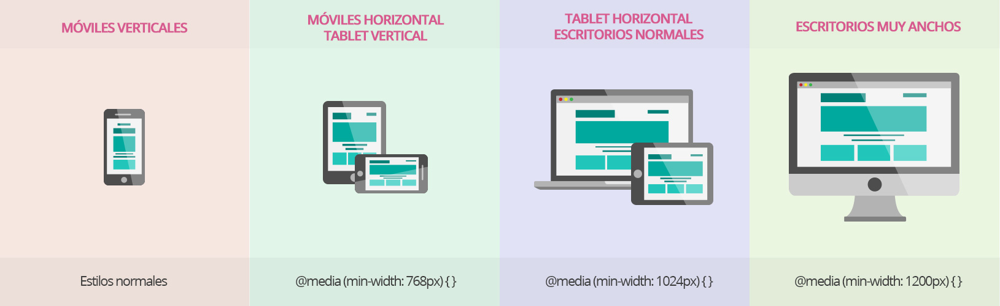

Que son las media query
En el siguiente audio encontrará una breve descripción de lo que son las media query, algo de su nacimiento, como implementarlo y los diferentes usos que tienen en las páginas.
En el siguiente audio encontrará una breve descripción de lo que son las media query, algo de su nacimiento, como implementarlo y los diferentes usos que tienen en las páginas.